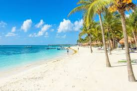
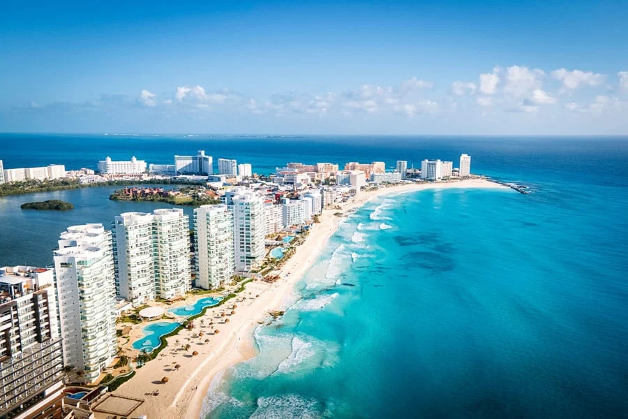
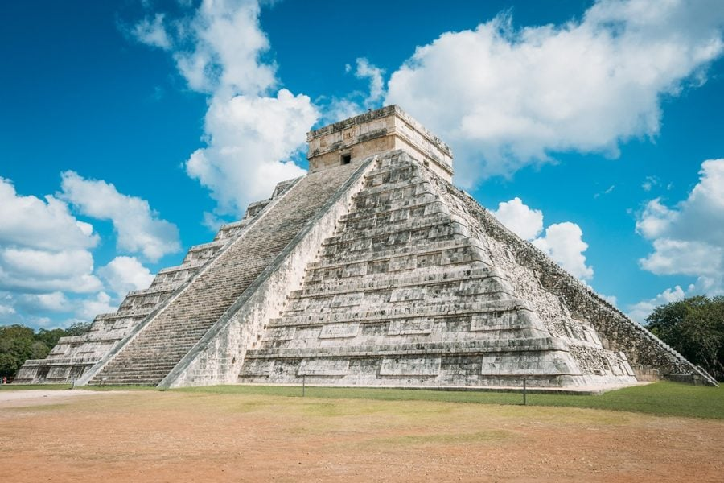
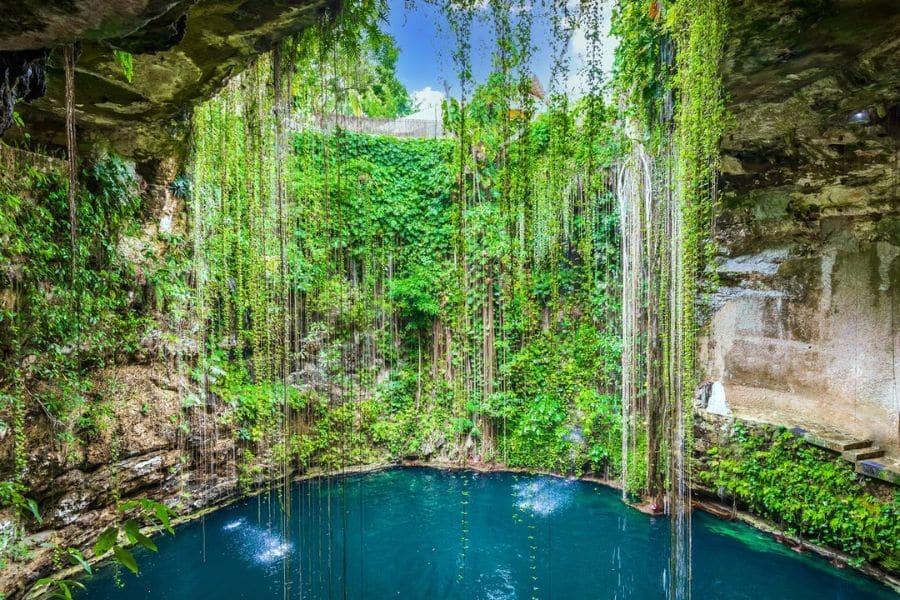
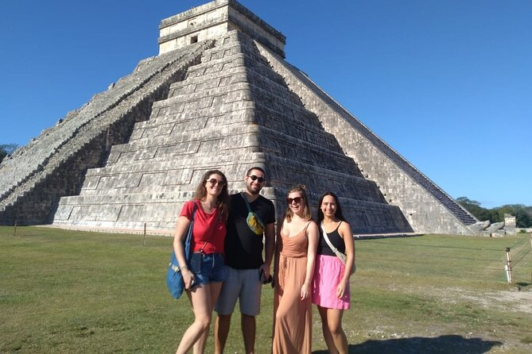
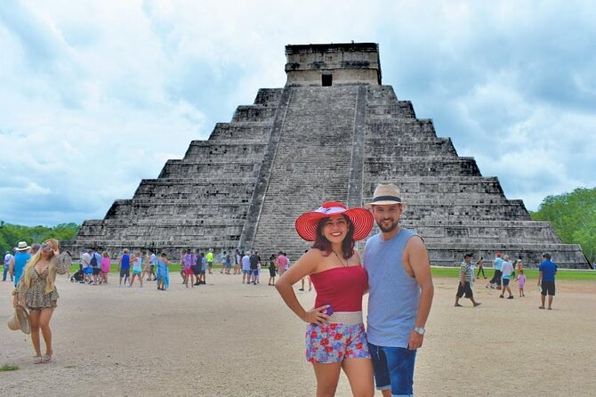
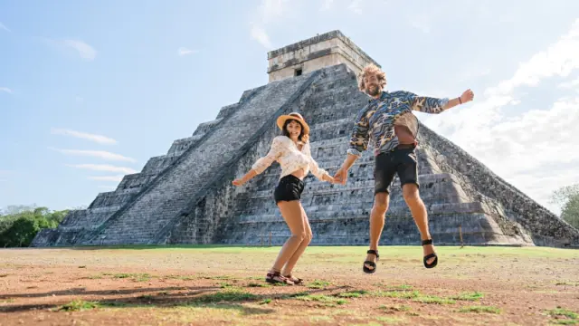

Chichén Itzá abre todos los días de 8:00 a 17:00 horas. La última entrada es una hora antes del cierre. Se recomienda llegar temprano para evitar las multitudes y el calor.
Chichén Itzá

Ubicación
Ciudad: Yucatán
País: Mexico
Descripción
Es uno de los sitios arqueológicos más emblemáticos del mundo y un símbolo icónico de la civilización maya. Ubicado en el estado de Yucatán, México, fue construido entre los siglos VI y X, alcanzando su apogeo en el período Clásico Terminal. Sus majestuosas pirámides, templos y observatorios reflejan el avanzado conocimiento astronómico y arquitectónico de los mayas. Visitarlo es una experiencia única, recorriendo estructuras históricas como la Pirámide de Kukulkán, el Templo de los Guerreros y el Observatorio, y descubriendo la riqueza cultural de esta antigua ciudad.
Actividades Turísticas

Riviera Maya
Disfrutar de playas paradisíacas, parques eco-arqueológicos como Xcaret o Xel-Há, y visitas a sitios arqueológicos como Tulum o Cobá.

Cancún
Relajarse en playas, practicar deportes acuáticos, hacer excursiones a Isla Mujeres o tours de aventura acuática.

Chichén Itzá
Recorrer la emblemática pirámide de Kukulkán, el Templo de los Guerreros y el Observatorio, aprendiendo sobre la cultura y astronomía maya.

Cenotes
Nadar, bucear o hacer snorkel en cenotes como Ik Kil, Suytun, o en ríos subterráneos como Río Secreto.
Valladolid
Pasear por el centro colonial, visitar mercados locales, iglesias y cenotes cercanos como Zací o Suytun.

Biosfera Celestún
Avistamiento de flamencos, aves y fauna local en manglares, además de disfrutar de playas vírgenes y tours en lancha.
Cómo llegar a Chichén Itzá
-
Cancún
Punto de partida
-
Auto / Bus
Auto: 2 hs
Bus: 3 hs
-
Chichén Itzá
Entrada principal
Todo lo que debes saber antes de visitar
Chichén Itzá se encuentra en el estado de Yucatán. Se puede llegar en auto desde Cancún (~2.5–3 horas) o Mérida (~2 horas), o en bus desde Cancún, Playa del Carmen o Mérida con la empresa ADO.
La entrada general es de aproximadamente 533 MXN (alrededor de 25 USD) para adultos. Hay descuentos para estudiantes y menores de edad, y entrada gratuita para niños menores de 4 años.
Lleva ropa ligera y cómoda, sombrero o gorra, protector solar, agua y cámara. Evita mochilas grandes, ya que no se permite el acceso con ellas dentro del sitio arqueológico.
La mejor época es de noviembre a abril, cuando las temperaturas son más agradables y hay menos lluvias. Evita la temporada de verano y Semana Santa si buscas menos aglomeraciones.
Sí, hay visitas guiadas en español, inglés y otros idiomas que incluyen explicaciones sobre la pirámide de Kukulkán, el Templo de los Guerreros y el Observatorio. También hay tours combinados con cenotes cercanos y Valladolid. Se recomienda reservar con anticipación.
Reseñas de Nuestros Viajeros

Diego Martinez
"Muy buena la comunidad viajera, me gusta la asesoría personalizada para los viajes"

Lorenzo Reynoso
“Súper recomendado, fue una experiencia increíble y el viaje superó todas mis expectativas.”

Nicolas Lazarte
“Gracias a la comunidad viajera pude resolver todas mis dudas con la asesoría y disfrutar por completo del viaje.”